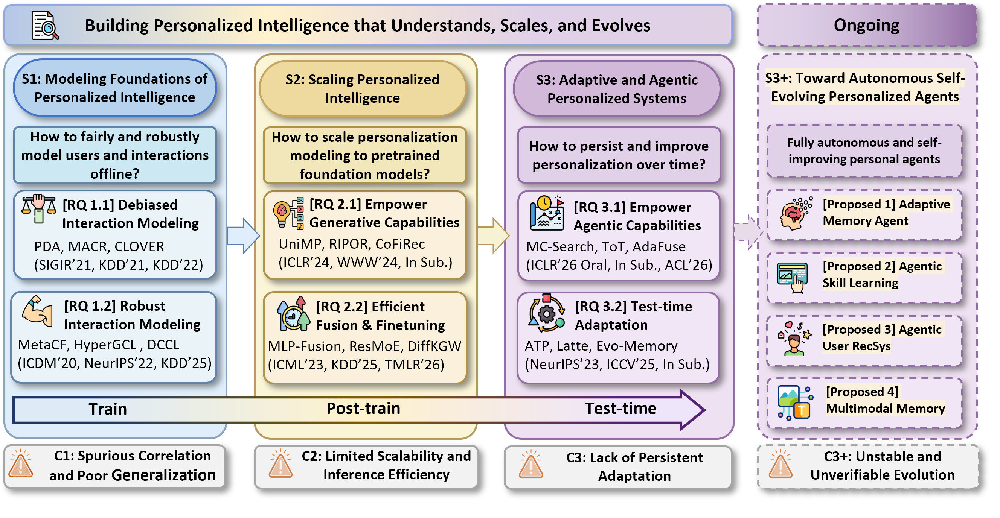
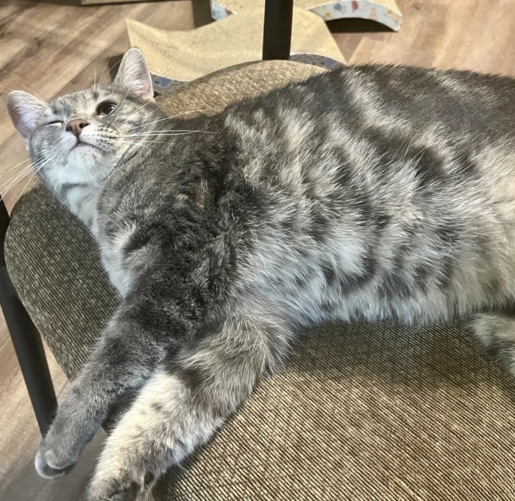
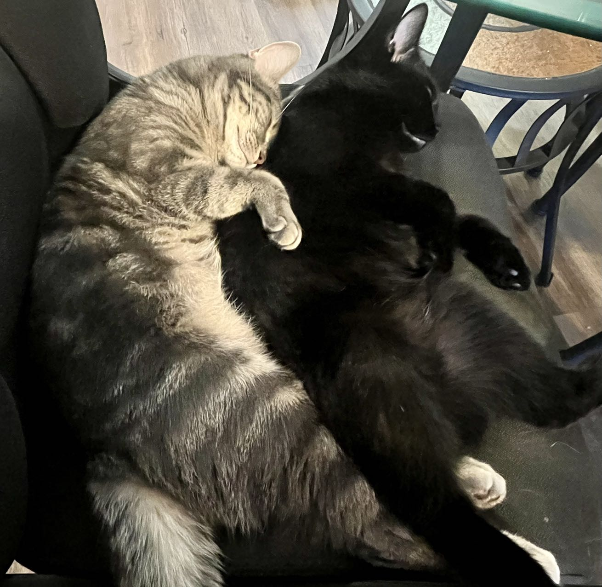

Tianxin Wei
My research centers on enhancing the personalization of LLMs across modalities and disciplines, making ML models more adaptive and accessible. B.S. from USTC School of the Gifted Young.
Actively seeking full-time and internship opportunities.
- LLM Personalization: user modeling, generative recommendation, trustworthy adaptation
- LLM Agents: long-term reasoning, self-improving, self-evolving memory
- LLM Efficiency: sampling, routing, scalable MoE/Transformer optimization
- Applications: agriculture, recommender systems, scientific domains

Education

University of Science and Technology of China
B.S. · 2016 ~ 2020
School of the Gifted Young · Advisor: Prof. Xiangnan He
Work Experience
Google DeepMind GenAI
May ~ Oct 2025 · Mountain View, CA & Urbana, IL
Research Intern · LLM Agent Memory and Personalization
Meta Ranking AI
Jan ~ May 2025 · Remote
Research Intern · Generative Recommender Systems with LLMs

Amazon
2023 ~ 2026 · Palo Alto, CA & Urbana, IL
Amazon Search · May ~ Dec 2023
Multi-modal LLMs for Personalization → ICLR 2024, WWW 2024, ICML 2024, KDD 2025
Amazon Shopping FM · May ~ Oct 2024
Multi-modal Watermarking for Generative Models → TMLR
Amazon Ads FM · Feb ~ May 2026
LLM Agent Continual Learning and Self-improving
Multi-modal LLMs for Personalization → ICLR 2024, WWW 2024, ICML 2024, KDD 2025
Amazon Shopping FM · May ~ Oct 2024
Multi-modal Watermarking for Generative Models → TMLR
Amazon Ads FM · Feb ~ May 2026
LLM Agent Continual Learning and Self-improving
News
Apr 2026
Four papers about Agentic Reasoning, Memory and Safety accepted by ACL 2026.
Feb 2026
MC-Search selected for Oral presentation (Top 1%) at ICLR 2026.
Jan 2026
Two papers about Agentic AI and VLM accepted by ICLR 2026.
Jan 2026
Survey on Agentic AI and Reasoning ranked #1 on Hugging Face Daily Papers.
Jan 2026
Evo-Memory featured in MIT Technology Review.
Jan 2026
Two papers accepted @ TMLR.
Jan 2026
One paper accepted @ EACL.
Dec 2025
One paper accepted @ npj Artificial Intelligence.
Nov 2025
One paper accepted @ AAAI 2026.
Aug 2025
One research and two workshop papers accepted @ NeurIPS 2025.
Aug 2025
One paper accepted @ EMNLP 2025.
Aug 2025
One paper accepted @ CIKM 2025.
Jun 2025
One paper accepted @ ICCV 2025.
May 2025
One paper accepted @ ACL 2025. Two papers accepted @ ICML 2025. One paper accepted @ UAI 2025.
Apr 2025
Joined Google DeepMind as a research intern.
Dec 2024
Recognized as Outstanding Reviewer @ KDD 2025.
Nov 2024
Two (co-)first-author papers accepted @ KDD 2025.
May 2024
One paper accepted @ KDD 2024. Two papers accepted @ ICML 2024.
Dec 2023
One paper accepted @ AAAI 2024.
Sep 2023
Two papers accepted @ NeurIPS 2023. NeurIPS 2023 Scholar Award.
Apr 2023
MLP Fusion accepted @ ICML 2023. ICML 2023 Grant Award.
Oct 2022
HyperGCL accepted @ NeurIPS 2022. NeurIPS 2022 Scholar Award.
May 2022
CLOVER accepted @ KDD 2022.
Jul 2021
SIGIR 2021 Best Paper Honorable Mention.
May 2021
MACR accepted @ KDD 2021.
Apr 2021
PDA accepted @ SIGIR 2021.
Publications
* equal contribution ^ mentorship
-
Agentic Reasoning for Large Language Models: A Survey
Survey 2026Key Insight: Unified taxonomy of how LLM agents plan, use tools, and reflect to reason.
-
Evo-Memory: Benchmarking LLM Agent Test-time Learning with Self-Evolving Memory
arXiv 2025Key Insight: LLM agents that autonomously build and refine memory from experience at test time.
-
CoFiRec: Coarse-to-Fine Tokenization for Generative Recommendation
arXiv 2025Key Insight: Hierarchical tokenization bridging semantics and collaboration for generative recommendation.
-
Rethinking Memory Mechanisms of Foundation Agents in the Second Half: A Survey
arXiv 2026Key Insight: Comprehensive categorization of agent memory mechanisms and key design gaps.
-
AdaFuse: Adaptive Ensemble Decoding with Test-Time Scaling for LLMs
ACL 2026 Main ConferenceKey Insight: Fuse multiple LLM outputs adaptively at decode time via test-time scaling.
-
PaperMind: Benchmarking Agentic Reasoning and Critique over Scientific Papers in Multimodal LLMs
ACL 2026 FindingsKey Insight: Benchmark for evaluating multimodal LLM reasoning and critique over scientific papers.
-
Mem-Gallery: Benchmarking Multimodal Long-Term Conversational Memory for MLLM Agents
ACL 2026 Main ConferenceKey Insight: Benchmark exposing MLLM agents' failure in long-term multimodal conversational memory.
-
ALERT: Zero-shot LLM Jailbreak Detection via Internal Discrepancy Amplification
ACL 2026 FindingsKey Insight: Zero-shot jailbreak detection by amplifying internal safety-generation discrepancies.
-
MC-Search: Evaluating and Enhancing Multimodal Agentic Search with Structured Long Reasoning Chains
ICLR 2026 Oral (Top 1%). Prelim version at NeurIPS 2025 Workshop.Key Insight: Structured long reasoning chains for multimodal agentic search.
-
Seeing but Not Believing: Probing the Disconnect Between Visual Attention and Answer Correctness in VLMs
ICLR 2026Key Insight: Correct visual attention does not guarantee correct VLM reasoning.
-
Harnessing Consistency for Robust Test-Time LLM Ensemble
EACL 2026 FindingsKey Insight: Consistency-driven test-time LLM ensemble for robust multi-model agreement.
-
Panda: Test-Time Adaptation with Negative Data Augmentation
AAAI 2026Key Insight: Negative data augmentation at test time for robust domain adaptation.
-
CLIMB: Class-imbalanced Learning Benchmark on Tabular Data
NeurIPS 2025Key Insight: Unified benchmark for class-imbalanced tabular learning.
-
Latte: Collaborative Test-Time Adaptation of Vision-Language Models in Federated Learning
ICCV 2025Key Insight: Collaborative test-time VLM adaptation across federated clients without sharing data.
-
Learning to Instruct: Fine-Tuning a Task-Aware Instruction Optimizer for Black-Box LLMs
EMNLP 2025 FindingsKey Insight: Auto-rewrite prompts for black-box LLMs via a learned instruction optimizer.
-
SelfElicit: Your Language Model Secretly Knows Where is the Relevant Evidence
ACL 2025 MainKey Insight: LLMs implicitly know where evidence is; self-eliciting beats external retrievers.
-
i²VAE: Interest Information Augmentation with Variational Regularizers for Cross-Domain Sequential Recommendation
UAI 2025Key Insight: Variational interest augmentation for cross-domain sequential recommendation.
-
Graph4MM: Weaving Multimodal Learning with Structural Information
ICML 2025Key Insight: Graph structure as inductive bias for richer multimodal representations.
-
Breaking Silos: Adaptive Model Fusion Unlocks Better Time Series Forecasting
ICML 2025Key Insight: Adaptive fusion of heterogeneous time series forecasters breaks model silos.
-
Connecting Domains and Contrasting Samples: A Ladder for Domain Generalization
KDD 2025 (Full Research, AR: 19%)Key Insight: Progressive domain connection via contrastive alignment for domain generalization.
-
MLP Fusion: Towards Efficient Fine-tuning of Dense and Mixture-of-Experts Language Models
v1 accepted to ICML 2023. Submitted to IEEE for possible publication.Key Insight: Lightweight MLP fusion for parameter-efficient fine-tuning of dense and MoE LLMs.
-
ResMoE: Space-efficient Compression of Mixture of Experts LLMs via Residual Restoration
KDD 2025 (Full Research, AR: 19%)Key Insight: Residual restoration compresses MoE LLMs while preserving expert specialization.
-
Meta Clustering of Neural Bandits
KDD 2024 (Full Research, AR: 20%)Key Insight: Meta-learning discovers bandit arm clusters for efficient shared exploration.
-
Graph Mixup on Approximate Gromov-Wasserstein Geodesics
ICML 2024 (Full Research, AR: 27.5%)Key Insight: Graph mixup along Gromov-Wasserstein geodesics for topology-aware augmentation.
-
Language Models as Semantic Indexers
ICML 2024 (Full Research, AR: 27.5%)Key Insight: Language models as end-to-end semantic indexers replacing traditional retrieval.
-
Towards Unified Multi-Modal Personalization: Large Vision-Language Models for Generative Recommendation and Beyond
ICLR 2024 (Full Research, AR: 31%)Key Insight: One vision-language model for unified multi-modal generative recommendation.
-
Scalable and Effective Generative Information Retrieval
WWW 2024 (Oral) (Full Research, AR: 20.2%)Key Insight: Scalable generative retrieval via residual-quantized prefix language modeling.
-
TAU: Trajectory Data Augmentation with Uncertainty for Next POI Recommendation
AAAI 2024 (Full Research, AR: 24%)Key Insight: Uncertainty-aware trajectory augmentation for next POI recommendation.
-
Meta-Learning with Neural Bandit Scheduler
NeurIPS 2023 (Full Research, AR: 26.1%)Key Insight: Neural bandit scheduling for adaptive task allocation in meta-learning.
-
Adaptive Test-Time Personalization for Federated Learning
NeurIPS 2023 (Full Research, AR: 26.1%)Key Insight: Test-time personalization bridging global federated models to local distributions.
-
NTK-approximating MLP Fusion for Efficient Language Model Fine-tuning
ICML 2023 (Full Research, AR: 27.9%)Key Insight: NTK-principled MLP fusion for theoretically grounded efficient LLM fine-tuning.
-
Augmentations in Hypergraph Contrastive Learning: Fabricated and Generative
NeurIPS 2022 (Full Research, AR: 25.6%)Key Insight: Fabricated and generative augmentations for hypergraph contrastive learning.
-
Comprehensive Fair Meta-learned Recommender System
KDD 2022 (Full Research, AR: 15.0%)Key Insight: Meta-learned recommendation with built-in fairness across user demographics.
-
Model-Agnostic Counterfactual Reasoning for Eliminating Popularity Bias in Recommender System
KDD 2021 (Full Research, AR: 15.4%)Key Insight: Counterfactual reasoning removes popularity bias from any recommender.
-
Causal Intervention for Leveraging Popularity Bias in Recommendation
SIGIR 2021 Best Paper Honorable Mention (1 out of All) (Full Research, AR: 21%)Key Insight: Causal intervention that leverages popularity signals while suppressing recommendation bias.
-
Fast Adaptation for Cold-start Collaborative Filtering with Meta-learning
ICDM 2020 (Full Research, AR: 9.8%)Key Insight: Meta-learning for rapid cold-start adaptation from few user interactions.
-
Unpaired Multimodal Neural Machine Translation via Reinforcement Learning
DASFAA 2021 (Full Research, AR: 20%)Key Insight: RL-based alignment of unpaired images and text for multimodal translation.
-
AR-Stock: Deep Augmented Relational Stock Prediction
AAAI 2021 Workshop on Knowledge Discovery from Unstructured Data (Oral)Key Insight: Augmented relational graph learning capturing inter-stock market dynamics.
-
DiffKGW: Stealthy and Robust Diffusion Model Watermarking
TMLRKey Insight: Stealthy, robust watermarking for diffusion models via generation-time intervention.
-
Pave Your Own Path: Graph Gradual Domain Adaptation on Fused Gromov-Wasserstein Geodesics
TMLRKey Insight: Gradual graph domain adaptation along fused Gromov-Wasserstein geodesics.
-
Flow Matching Meets Biology and Life Science: A Survey
npj Artificial IntelligenceKey Insight: Survey connecting flow matching to molecular and biological modeling.
-
Graph Contrastive Learning: An Odyssey towards Generalizable, Scalable and Principled Representation Learning on Graphs
IEEE Data Engineering BulletinKey Insight: Roadmap from augmentation design to principled graph contrastive learning.
Awards & Service
SIGIR 2021 Best Paper Honorable Mention
ICLR 2026 Oral Presentation (Top 1%)
KDD 2025 Outstanding Reviewer
Apple Scholar in AI/ML 2024 | University Top-3 Nominee
Amazon Internship Fellowship 2024 ($40k)
Conference Presentation Award, UIUC 2023
NeurIPS Scholar Award (2022, 2023)
ICML 2023 Grant Award
Program Committee / Reviewer: ICML (2021~2025), NeurIPS (2022~2025), ICLR (2023~2025), KDD (2023~2025), AAAI (2023~2024), CIKM (2021~2023), WSDM 2023, ACL 2023, EMNLP 2023, LOG 2022
Journal Reviewer: TPAMI, TKDD, TOIS, TKDE, DMKD, Machine Learning, TMLR
Journal Reviewer: TPAMI, TKDD, TOIS, TKDE, DMKD, Machine Learning, TMLR
Pets

